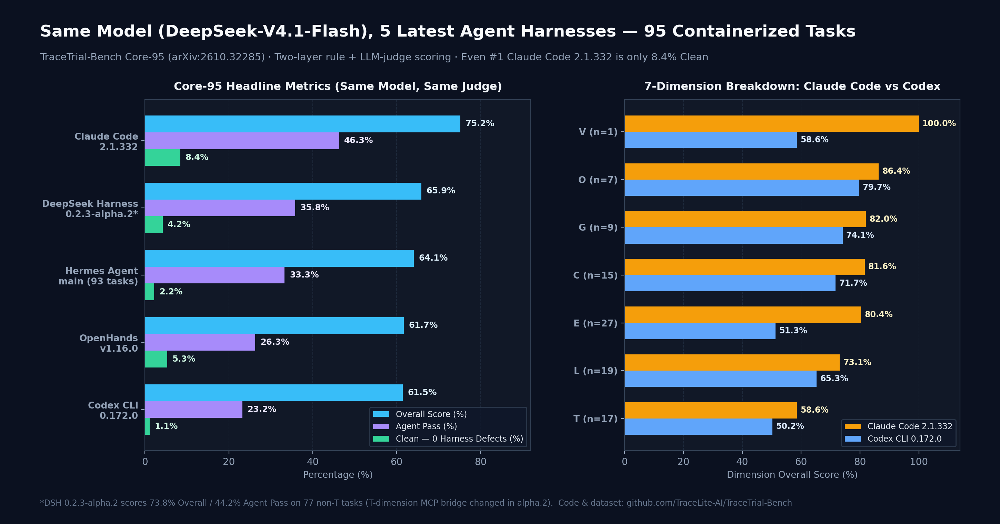

TRACELITE AI / TECHNICAL BLOG · NOVEMBER 26, 2026
From Traces to Upstream Fixes: Open-Source Harness Reliability Engineering
A benchmark only matters when it changes real software. Over the past month, we ran TraceTrial-Bench Core-95 across the latest releases of seven major agent harnesses, turning trace-verified failure attributions into 24 upstream pull requests, an official Harbor matched-parity integration, and reproducible engineering proposals for Claude Code, Codex, and DeepSeek Harness.
arXiv:2610.32285 · GitHub · Hugging Face Dataset · Harbor Adapter PR #121
1. Same Model, Five Latest Harnesses: Core-95 Results
To isolate the runtime layer from model capability, we evaluated five current agent harnesses under identical containerized conditions: the same 95 TraceTrial-Bench Core tasks (final.manifest), the same model (DeepSeek-V4.1-Flash), and the same two-layer rule + LLM-judge scoring pipeline. Every run executes offline inside an isolated Docker container with independent private ground truth outside the agent-writable workspace.

| Harness (Version) | Overall | Agent Pass | Agent Score | Harness Macro | Clean |
|---|---|---|---|---|---|
Claude Code 2.1.332 | 75.2% | 46.3% (44/95) | 78.5% | 71.8% | 8.4% (8/95) |
DeepSeek Harness 0.2.3-alpha.2* | 65.9% | 35.8% (34/95) | 70.6% | 61.3% | 4.2% (4/95) |
Hermes Agent main (93 tasks) | 64.1% | 33.3% (31/93) | 69.7% | 58.4% | 2.2% (2/93) |
OpenHands v1.16.0 | 61.7% | 26.3% (25/95) | 60.0% | 63.3% | 5.3% (5/95) |
Codex CLI 0.172.0 | 61.5% | 23.2% (22/95) | 63.8% | 59.2% | 1.1% (1/95) |
*On DeepSeek Harness 0.2.3-alpha.2, the T-dimension (17 MCP tasks) was impacted by an alpha.2 Cordis MCP bridge schema change; across the remaining 77 scored non-T tasks, DSH achieves 73.8% Overall and 44.2% Agent Pass. Claude Code 2.1.332 and DSH 0.2.3-alpha.2 each had 1 unscoreable 300s turn timeout (counted as 0 in the 95-task denominator).
2. Turning Failure Traces into 24 Upstream Pull Requests
Rather than stopping at leaderboard tables, we traced each recurring harness_caused failure down to exact source lines, wrote minimal regression tests, verified containerized A/B score lifts, and submitted pull requests upstream across five major open-source ecosystems.
| Ecosystem | Pull Requests | Key Defects Fixed & Upstream Validation |
|---|---|---|
| Harbor Framework |
adapters#121 harbor-datasets#286 HF parity#288 |
Official 14-task containerized TraceTrial-Bench adapter (Ready for Review). Passes 31/31 validate_adapter.py checks, 14/14 Oracle = 1.000, and 3×14 matched parity (Overall 66.90 ± 0.59 vs 68.40 ± 0.95; Harness 52.92 ± 0.47 vs 52.94 ± 0.24). |
| OpenHands SDK · CLI · Benchmarks |
sdk#7001 ·
sdk#7003 sdk#6986–7025 (10 PRs) CLI#846 · benchmarks#792 |
Core maintainer @enyst independently reproduced and acknowledged our fail-open subagent confirmation bypass (#6999 / #7001, priority:high) and secret-rotation plaintext leakage (#7002 / #7003, reproduced in main@722e5d40). Also fixed hard-timeout process-group reaping (#7025), structured truncation metadata (#7024), headless silent exit-0 errors (CLI#846), and official OpenHands/benchmarks integration (#792). |
| NousResearch Hermes Agent 265k★ |
#158167 ·
#158168 #158214 · #158215 #158216 |
Anchored by a full 93-task containerized baseline. Fixed MCP isError structuredContent drop (#158167), zero-bound truncation leak (#158168), trace-export is_error omission (#158214: containerized A/B lifted O2 56.2% → 87.5%, Harness 62.5% → 100.0%), foreground timeout metadata drop (#158215: E6 87.5% → 93.8%), and CLI refusal diagnostics (#158216). |
| OpenCode |
#64838 ·
#64841 #64852 RFCs: #65017, #65018 |
Fixed direct MCP structuredContent/EmbeddedResource drops (#64838, verified by maintainer @ychampion), SubagentTool session permission inheritance (#64841), and run --format json background notification streaming (#64852: L4 score 45.0 → 60.0). Plus triaged RFCs for interactive PTY (#65017) and truncation metadata (#65018). |
| Aider | #6002 · #6043 | Added opt-in --yes-shell-commands + shell output reflection in one-shot --message runs (#6002: E1 25%/14.3% → 37.5%/28.6%) and --events-jsonl structured telemetry with exact integer token counts (#6043, closes #6003). |
3. Trace-Backed Proposals for Claude Code, Codex, and DeepSeek Harness
For harnesses that are closed-source or accept community design input via Discussions and Issues, we distilled our Core-95 runs into minimal, verbatim-trace engineering proposals focused strictly on features that move end-to-end Agent Pass rates:
-
Claude Code (
2.1.332) — Ranked #1 across every dimension (75.2%Overall,46.3%Agent Pass), yet21/94runs were stillharness_causedand35/94required model workarounds. We filed two focused Feature Requests: anthropics/claude-code#112385 (headless-p/stream-jsonstructuredAskUserQuestioncallback—4/4T6/T10tasks failed at the harness layer) and anthropics/claude-code#112386 (native interactive PTY session tool—E9tasks dropped to37.5%). -
OpenAI Codex CLI (
0.172.0) — Completed95/95runs with zero infra crashes, but37/95(38.9%) wereharness_causedwith Execution (E) trailing Claude Code by29.1 pp(51.3%vs80.4%). We published openai/codex#63850 showing verbatim0.172.0traces where voluntaryexit 137andSIGKILL(OOM-kill) return identicalexit_code: 137metadata with no signal indicator. -
DeepSeek Harness (
0.2.2-rc.5&0.2.3-alpha.2) — Strong core runtime (73.8%Overall across 77 non-T tasks). We published three trace-backed Ideas Discussions: #14270 (54-run controlled A/B experiment showingpromoteOnTimeout: falselifts Agent Pass from 68.6% → 82.4%, proposing a per-callkillOnTimeoutoverride), #14276 (preserving head + tail onbashtruncation and eliminating nested double-spill files), and #14277 (including POSIX128 + signalexit codes and preserving chronologicalstdout/stderrorder).
4. Four Reliability Patterns That Recur Across Every Harness
Exit, signal, and timeout fidelity
Separating voluntary exit codes from Unix signal deaths (SIGKILL/SIGTERM) and returning explicit structured timeout/error flags prevents stale-artifact acceptance and false success reports.
Head + tail truncation with single spill
Tail-only clipping erases schemas, headers, and root-cause errors at the top of command output. Preserving both head and tail with a single authoritative spill path eliminates wasted recovery turns.
Fail-closed subagent & secret boundaries
Permissions, security analyzers, and rotated secret registries must propagate across subagent boundaries and fail closed—never silently auto-approving when a confirmation handler is absent.
Headless-first observability
Non-interactive CLI/SDK modes need non-zero exit codes on fatal errors, structured AskUserQuestion callbacks, and lossless MCP/tool envelopes so CI and evaluation pipelines can trust the trace.
5. Reproduce or Contribute
All 95 tasks, Docker harness adapters, deterministic verifiers, and our DeepSeek Harness 54-run timeout A/B experiment are open-sourced under MIT.
- Paper: Trial by Trace (arXiv:2610.32285) — Hugging Face #2 Paper of the Day
- Benchmark & Experiments: github.com/TraceLite-AI/TraceTrial-Bench
- Dataset: huggingface.co/datasets/TraceLite-AI/TraceTrial-Bench
- Interactive Leaderboard: tracelite.ai/leaderboard.html
- Full Project Report: tracelite.ai/trial-by-trace.html